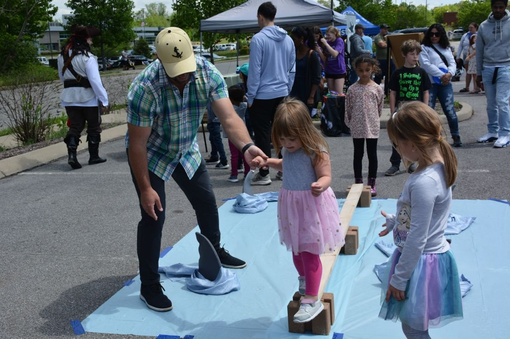
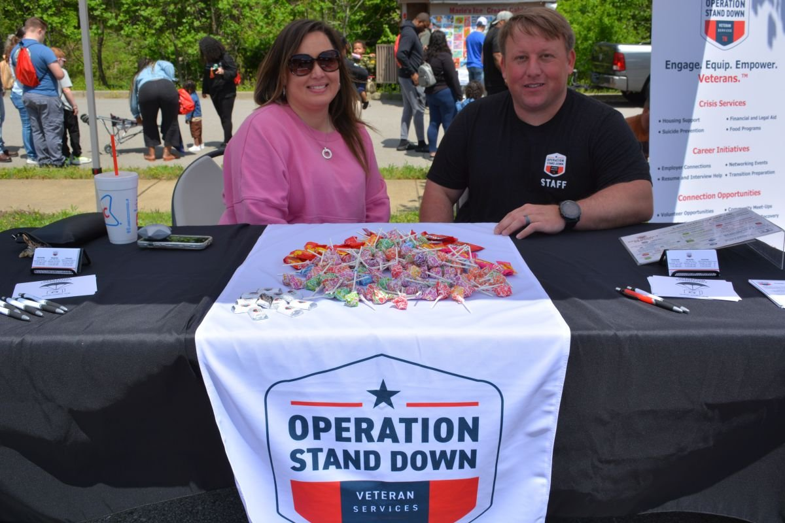
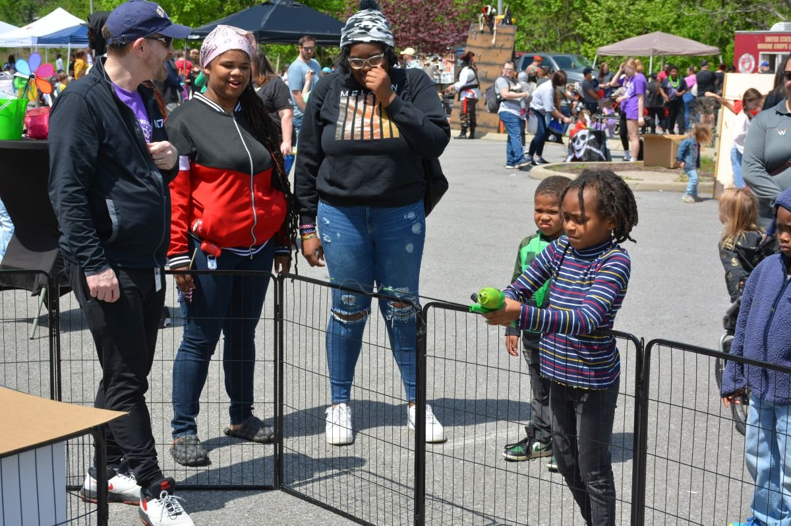
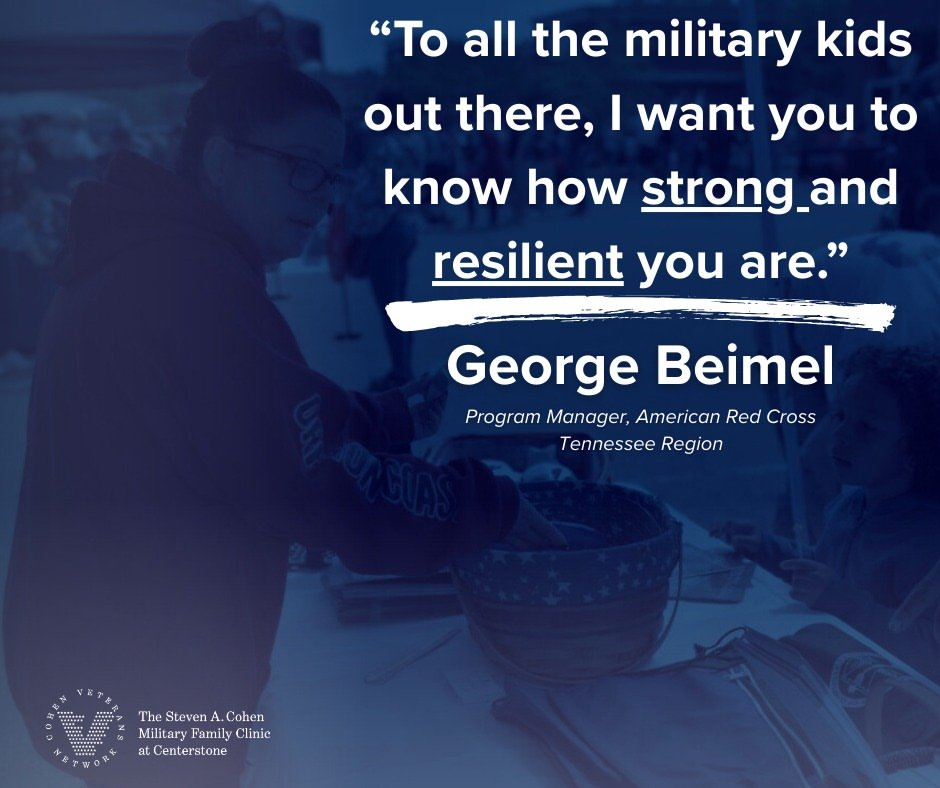

Clarksville Family Carnival Marketing Campaign
Social content, photography, and vendor outreach for a military family nonprofit's flagship annual event — part of a team effort that helped grow attendance by over 110% year-over-year.
Role
Marketing & Content Support
Focus
Social Media Marketing, Content Creation, Community Outreach
Project Type
Community Marketing Campaign
Project Overview
Contributed to the marketing behind the Steven A. Cohen Military Family Clinic at Centerstone's annual Family Carnival in Clarksville, TN — a community event connecting military families with local resources while raising awareness of the clinic's mental health services. Worked alongside the outreach and communications team on content, promotion, and vendor coordination, helping the event grow even while competing against a major carnival happening in Nashville the same weekend.
+111%
Growth in event attendance year-over-year — from roughly 300 to 633 attendees — a team result I contributed content, outreach, and promotion toward.
~8–10x
Typical engagement on campaign posts compared to the account's usual post performance (a rough estimate from memory, not tracked analytics).




Behind the scenes
A quick look at the team on-site during the carnival — part of the content created to keep the campaign going before, during, and after the event.
My Contributions
- Designed promotional graphics and social content for the campaign in Canva, supporting the push to grow attendance.
- Wrote social captions and promotional copy across Facebook and Instagram to build awareness ahead of the event.
- Captured event photography and conducted on-site vendor interviews, creating content that extended engagement online before and during the carnival.
- Created content spotlighting participating vendors and community partners — including U.S. Bank, the American Red Cross, and Operation Stand Down — through on-site interviews and social posts.
- Produced content that consistently outperformed the account's typical post engagement, with the event recap post drawing roughly 30 times the usual engagement.
- Collaborated with the outreach and communications team to keep campaign messaging aligned with Centerstone's brand standards.
- Contributed to a campaign that helped grow attendance from roughly 300 to 633 people, even while competing against a major carnival happening in Nashville the same weekend.
Community Partners
The carnival was presented by U.S. Bank, with additional support from community organizations including the American Red Cross and Operation Stand Down, who ran booths and activities on-site. Local officials, including the county mayor, have also taken part in past years.
Press
Skills Highlighted
Social media marketing, content creation, graphic design (Canva), event photography, copywriting, vendor and partnership outreach, and cross-functional collaboration.